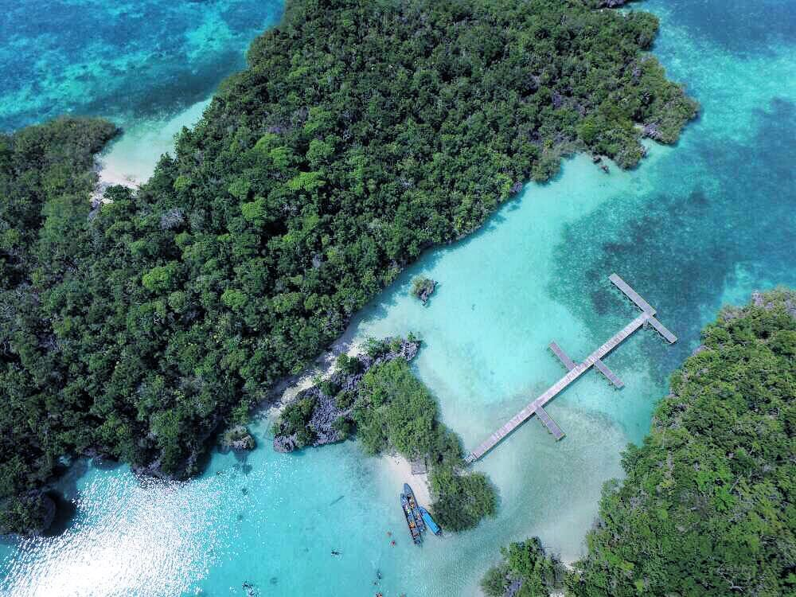
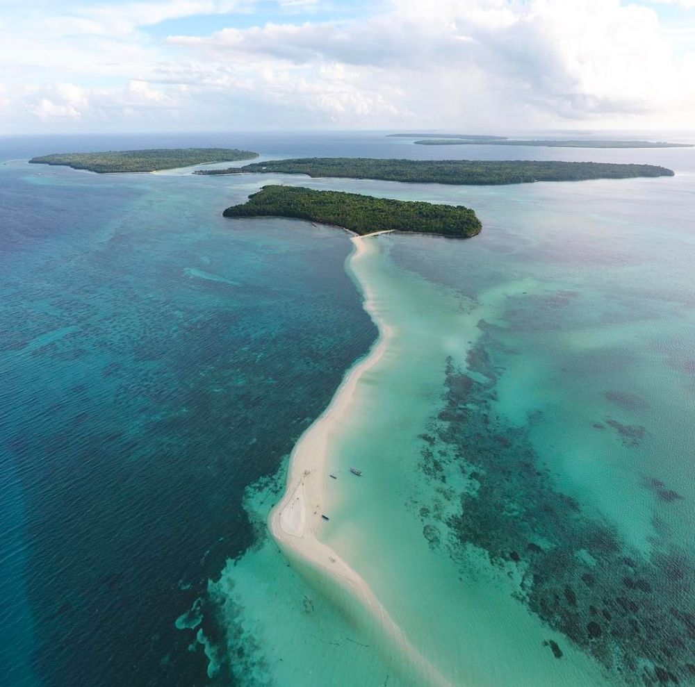

1. Pulau Bair
Dikelilingi bukit karang, Pulau Bair dalam gugusan Kepulauan Kei digadang-gadang sebagai mini Raja Ampat dari Maluku Tenggara. Airnya yang jernih dan berwarna hijau kebiruan. Ada juga biota laut yang eksotis menambah panjang daftar pesona pulau ini.Selain berjemur dan mengelilingi pulau menggunakan perahu, kamu bisa mencoba menyelam untuk menikmati keindahan bawah lautnya. Kalau beruntung, kamu dapat berenang bersama ikan hiu sirip hitam yang tidak berbahaya, lho!

2. Harangur waterfall
Wisata paket lengkap, mungkin kesan itu yang cocok untuk menggambarkan Kepulauan Kei. Bagaimana tidak, pulau ini tak hanya menawarkan pesona pesisir dan lautan yang menawan, melainkan juga hutan dan air terjun yang sangat eksotis.Terletak di Kei Besar, Air Terjun Harangur tampak gagah menghadap lautan biru di tengah lebatnya pepohonan. Kalau cukup bernyali, kamu bisa memacu adrenalin dengan melompat dari ujung tebing. Dijamin segar banget!

3. Hawang cave
Satu lagi destinasi eksotis di Kepulauan Kei yang mampu menyihir wisatawan. Ya, Goa Hawang! Air sejernih kristal dijamin memanggil-manggil nama kamu untuk segera menyelam. Airnya berasal dari sungai bawah tanah yang terhubung langsung dengan sumber mata air terbesar di Kepulauan kei, lho!

4. Pantai Ngurtavur
Dalam bahasa Kei, ngurtavur berasal dari dua kata, yaitu ngur yang berarti pasir dan tavur yang berarti timbul. Sesuai namanya, Pantai Ngurtavur merupakan hamparan pesisir putih yang timbul saat air laut sedang surut sehingga tampak seperti membelah dua lautan. Pantai Ngurtavur berlokasi di Pulau Woha dengan pesisir yang membentang sepanjang 2 km. Di musim tertentu, kamu juga bisa menyaksikan kawanan burung pelikan di sekitar pulau, lho!

5. Pantai Ngurbloat
Pantai Ngurbloat menawarkan pengalaman menginjakkan kaki di pasir pantai sehalus tepung dengan garis pantai sepanjang 3 sampai 5 km. Pantai ini bahkan diakui sebagai pantai terhalus di dunia oleh National Geographic.Deretan pohon kelapa di pesisir sekaligus nembah keelokan pantai ini. Selain bersantai, kamu juga bisa memuaskan lapar dan dahaga di beberapa beach club yang tersedia di sekitarnya.